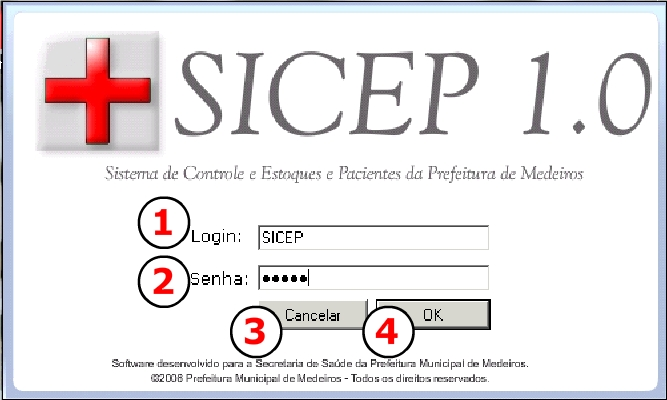

|
|
||||
|
ENTRANDO NO SICEP 1.0
Para todo usuário do SICEP 1.0, um login e senha é designado,
apartir dessa identificação você e seu perfil será reconhecido. Assim somente as
funções pertinentes ao seu perfil serão apresentadas. Quando você clica duas vezes
sobre o ícone do SICEP 1.0 e executa
o programa, uma tela pedindo essa identificação
é apresentada, esta tela é chamada de Tela de Login e essa entra no
sistema é o
ato de Logar. A TELA DE LOGIN
 Oriente-se pelos números exibidos na figura para
visualizar suas funções explicadas:
|
||||
|
|